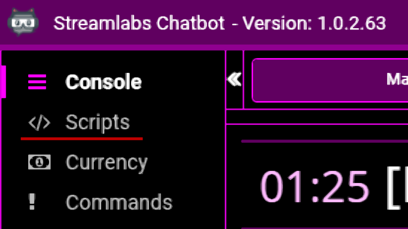
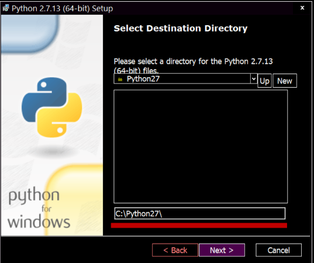
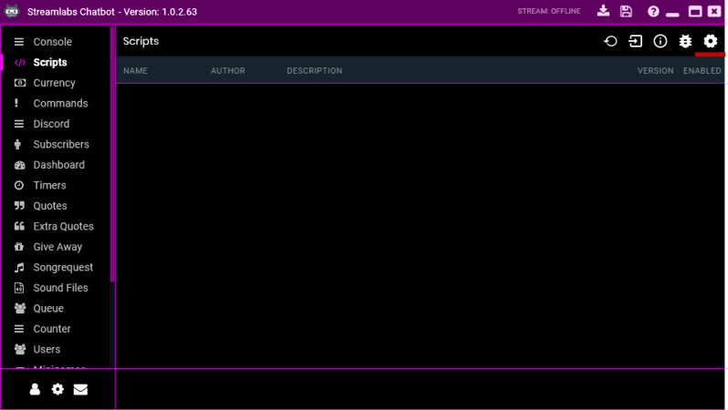
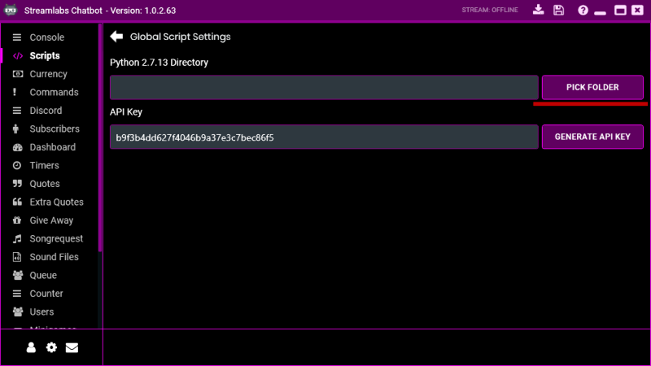
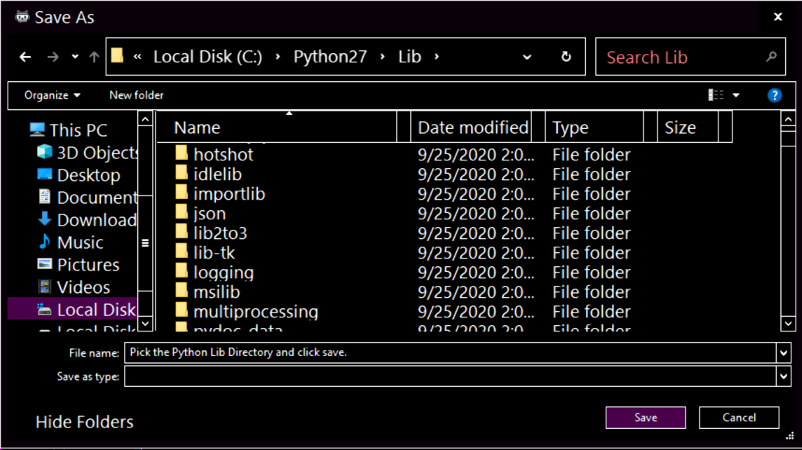
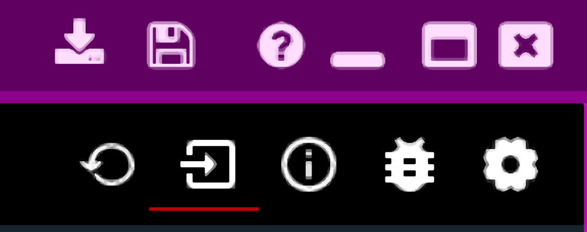
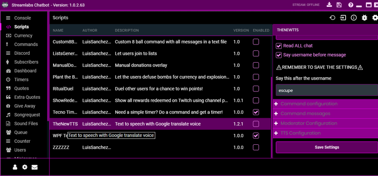

How to use scripts in Streamlabs Chatbot
Streamlabs Chatbot is a powerful chatbot for Twitch and Youtube, with ability to make commands, timers, your own currency, song requests and many more features. But there are some times where these features are not enough so, What do you do? You install scripts to integrate custom functionality on your chatbot.
What are Streamlabs Chatbot scripts?
A Streamlabs Chatbot script is a package that contains code in the Python programming language and configuration files to add custom functionality to your chatbot, These packages are in a compressed .ZIP format for easy installation. Because these scripts are programmed in the Python 2.7 programming language, these scripts have a lot of potential, for example;
- Simple text based minigames
- Dungeons and Dragons dice
- Multiple currencies
- OBS overlay integration
- Database communication
- And many more!
You can find a lot of scripts in the #scripts channel in the Streamlabs Chatbot Discord server or in my Github page
BEWARE: Do not install scripts from unknown or untrusted sources since the scripts have elevated permissions and could harm your computer. Only install scripts from developers you trust or from the #scripts channel in the Streamlabs Chatbot Discord server.
Preparing Streamlabs Chatbot to run scripts
1. Install and configure Streamlabs Chatbot
If you haven’t already, download and install Streamlabs chatbot from https://streamlabs.com/chatbot and install it. After installing make sure to follow the Setup Wizard to have your chatbot up and running.
If you already have Streamlabs Chatbot installed, make sure you are logged in on both the Bot account and the Streamer account.
After this make sure the Scripts tab shows on the left side of the window.

2. Install Python 2.7.13
Python 2.7.13 is a requirement to be able to run scripts in Streamlabs Chatbot, download the Windows x86-64 MSI installer from https://www.python.org/downloads/release/python-2713/ and run it.
When the installer opens, select the (•) Install for all users option and click Next >.
On this view, take note of the installation path, in this case is C:\Python27\

Then click twice on Next > and accept the administration prompt. After waiting for the installation click Finish.
3. Select the Python folder in Streamlabs Chatbot
In Streamlabs Chatbot go to the Scripts tab, then on the top right click on the ⚙ icon.

In this menu click on the PICK FOLDER button, it will show a message telling you that you need to select the Lib folder for it to work, click OK.

Now follow the path you wrote in the last step and enter to the Lib folder and click Save.

Go back and now you are ready to start using scripts!
How to install a script in Streamlabs Chatbot
Now that Streamlabs Chatbot is setup and ready to rock you need a script to install, if you already have one continue to the next step, if you don’t you can use my Text to Speech script to follow the tutorial.
With your .ZIP file handy, in the Scripts tab click on the import icon.

Browse your .ZIP file and open it, you will receive a success message and the scripts list will refresh showing you the imported script.

Now that the script is loaded you have to [✓] enable the script for it to start working. After enabling it just click on the script name, configure it to your needs, save settings and start using it!
Here is a list of scripts made by me to extend your chatbot:
- TheNewTTS – The best Chat to Speech for Twitch, Mixer and Youtube for Streamlabs Chatbot
- Tecno Timers – Start timers with a command and show them on an overlay
- Cool Hangman – Let your users win points guessing letters and words, while everything is reflected in your OBS with an overlay
- Show Redeems – Channel Points redeems on your Chatbot’s Console
Appreciate the clear and concise startup guide! Nice work. I’m looking for an answer to a script redundancy issue in streamlabs chatbot. I would like to use two scripts that are nearly identical, but chatbot recognizes them as the same script, despite them having distinct folder and file names. How do I distinguish these scripts so that chatbot will recognize them as separate?
Hi Tomas.
First make sure that both folders have different name, then inside each folder there is a .py file, the name should be foldername_StreamlabsSystem.py. If the Chatbot still only shows one it must be that they have the same name, you must open one of the foldername_StreamlabsSystem.py and locate the line with the script name:
ScriptName = "My Script"You should change one file to a different name:
ScriptName = "My Script 2"Let me know if this worked for you, if there are still problems take a look at the bug icon on the top right to check if there are any errors while loading the scripts.
Best regards.